敵がおそってくる
🎯 この章でできるようになること
- 敵をプレイヤーのほうへ動かせる
- オブジェクト変数で、敵1体ずつに体力を持たせられる
- ぶつかったこと（衝突）を条件にできる
- タイマーとランダムで、敵をどんどん出せる
2-1. この章で作るしくみ
走るアニメーションにする
ゴブリンの体力を1へらす
ランダムな場所にゴブリンを作る
2-2. ゴブリンを用意しよう
「オブジェクト」の「＋」から Dungeon のパックを開き、Character の中の「Goblin」を選んでプロジェクトに追加します。
アニメーションは「Idle」と「Run」の2つです。
ゴブリンはイベントで作り出すので、シーンには置かなくてOK。
もし置いてしまったら、シーンのゴブリンをクリックして Delete キーで消しておこう。
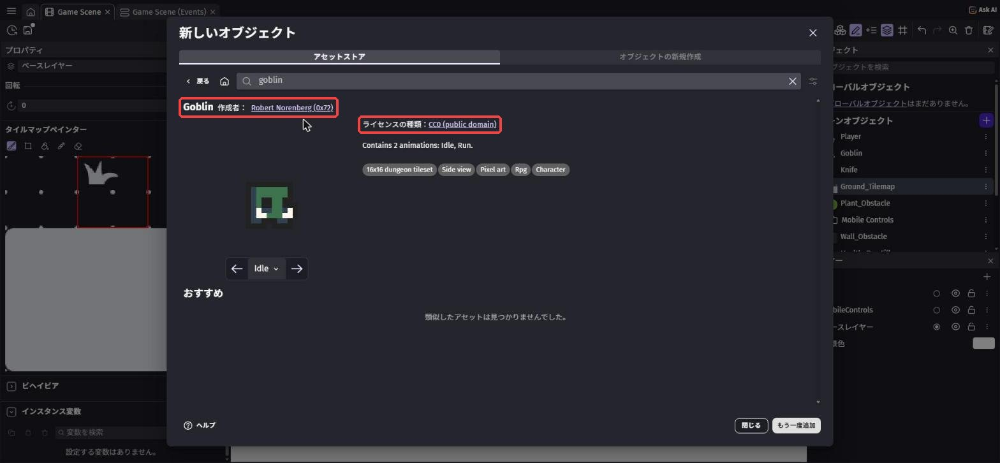
一覧の Goblin の「⋮」から「オブジェクトを編集」を選んで、「Goblin を編集」の画面を開きます。
上の「変数」のタブを開き、「変数を追加」を押します。
名前を Health、型は「数値」、値を 2 にして「適用」。
ナイフ2回で倒れるゴブリンになります。
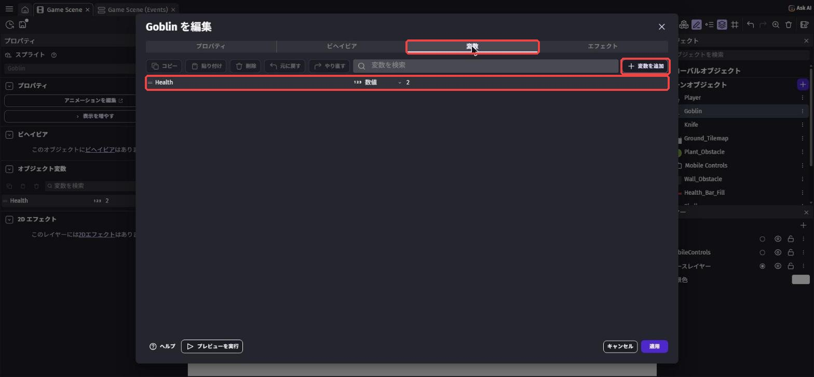
Health = 2（赤枠）ゴブリンが10体いたら、10体それぞれが自分の Health を持っています。
だから、ナイフが当たったゴブリンだけ体力がへります。
2-3. ゴブリンが追いかけてくる
イベントシートで新しいグループ Enemy を作ります。
条件のないイベントを作ります（条件は空のままでOK）。
アクションは2つです。
オブジェクトに向かって移動で検索 →「オブジェクトに向かって移動するフォースを追加する」、オブジェクト はGoblin、目標オブジェクト はPlayer、速度 は100、下は「瞬間的」のまま- 「アニメーション名」で
Goblinを「Run」
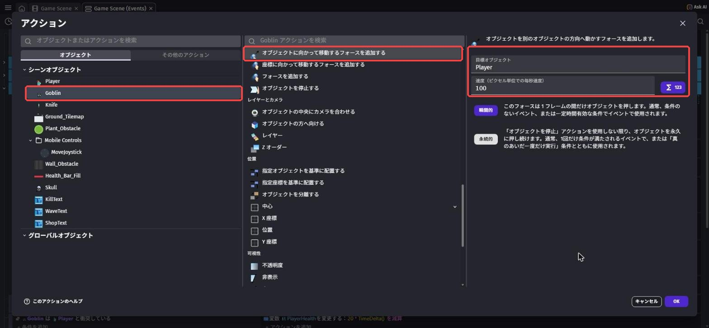
瞬間的 の力を毎回かけるので、ゴブリンはずっとプレイヤーを追いかけ続けます。
新しいイベントの条件に、X 座標 で検索 →「X 座標」を入れます。
オブジェクト は Goblin、テスト記号 は「>（より大きい）」、値は Player.X()。
アクションは「オブジェクトを水平方向に反転させる」で Goblin を「はい」。
もう1つイベントを作り、テスト記号 を「≦（以下）」、反転 を「いいえ」にします。
ゴブリンがいつもプレイヤーのほうを向くようになります。
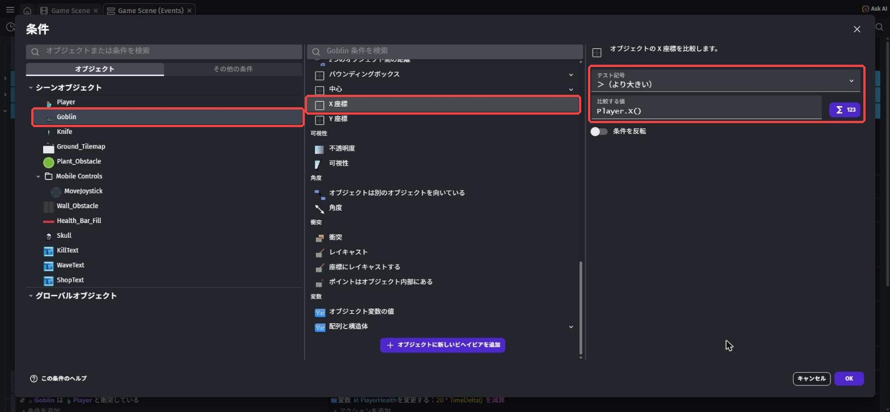
2-4. ナイフで倒そう
新しいイベントの条件に、衝突 で検索 →「衝突」（全般 › オブジェクト › 衝突 のもの）を入れます。
1つ目の オブジェクト は Knife、2つ目は Goblin。
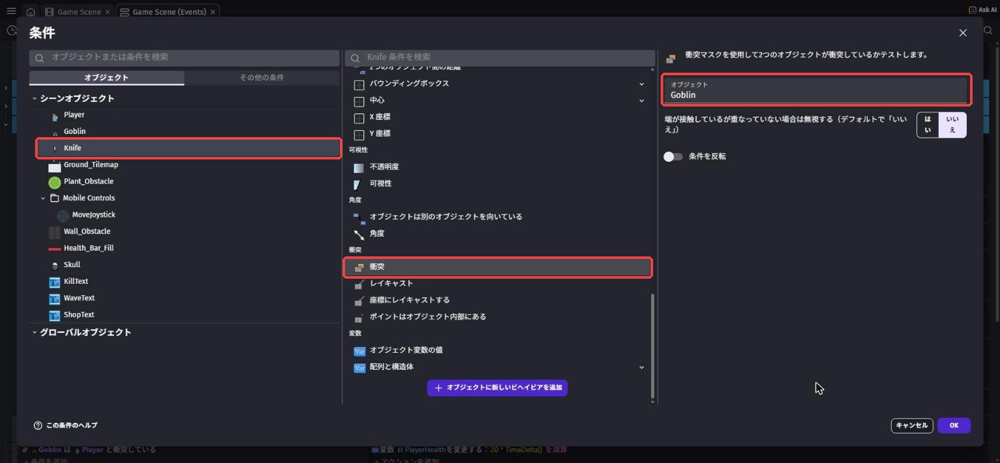
アクションは2つです。
- 「オブジェクトを削除する」で
Knife オブジェクト変数の値を変更で検索 →「オブジェクト変数の値を変更」、オブジェクト はGoblin、変数 はHealth、演算子 は「ー（引く）」、値 は1
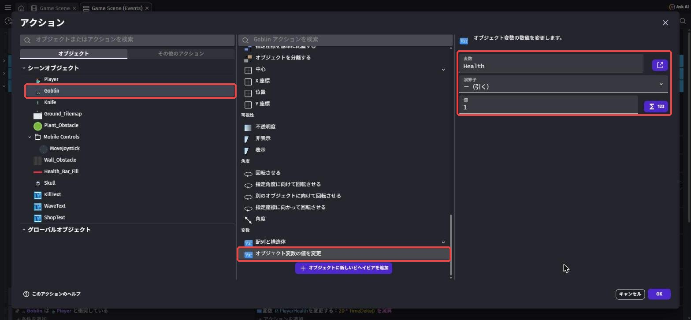
新しいイベントの条件に、オブジェクト変数の値 で検索 →「オブジェクト変数の値」。
オブジェクト は Goblin、変数 は Health、テスト記号 は「≦（以下）」、値は 0。
アクションは「オブジェクトを削除する」で Goblin。
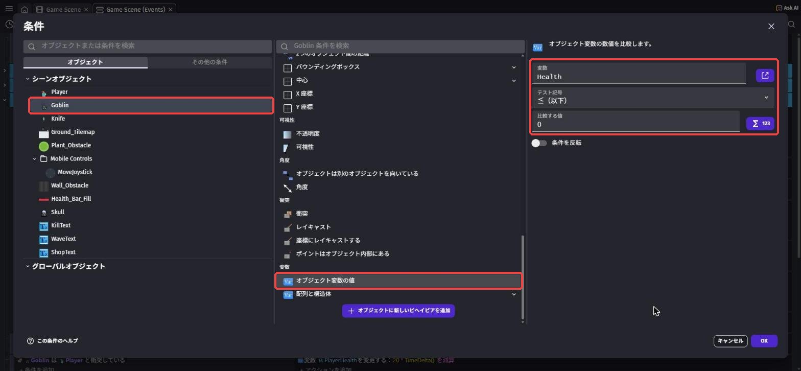
2-5. ゴブリンをどんどん出そう
新しいイベントの条件に、シーンタイマーの値 で検索 →「シーンタイマーの値」。
タイマーの名称 は "EnemyTimer"（ダブルクォーテーションごと入れる）、テスト記号 は「≧（以上）」、時間（秒） は 2。
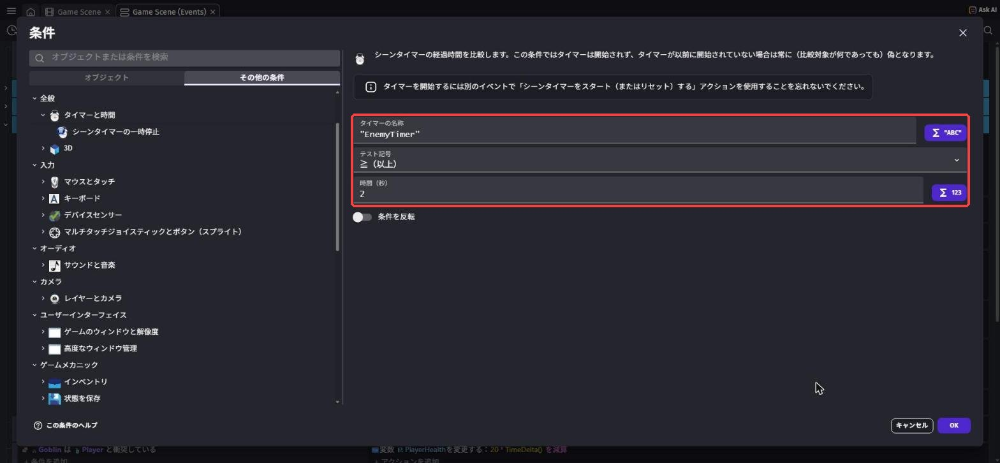
アクションは3つです。
シーンタイマーをスタートで検索 →「シーンタイマーをスタート（またはリセット）する」、"EnemyTimer"（0にもどす）- 「オブジェクトを生成する」で
Goblinを、下の式の場所に作る - 「スケール」で
Goblinを3
RandomInRange(200, 1100)RandomInRange(150, 600)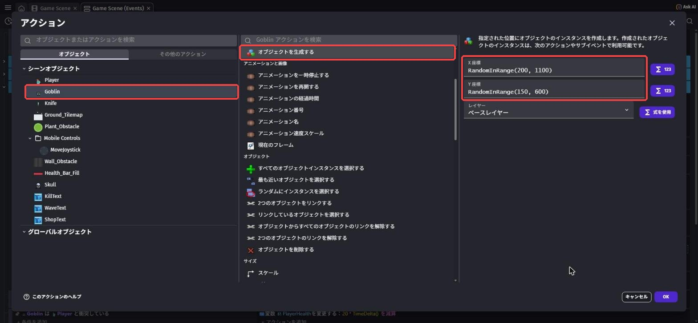
毎回ちがう場所にゴブリンが出てきます。
最後に、条件 シーンが始まった →「シーンが始まった」のイベントを作ります。
アクションは「シーンタイマーをスタート（またはリセット）する」で "EnemyTimer"。
これがないとタイマーが動かず、ゴブリンが1体も出てきません。
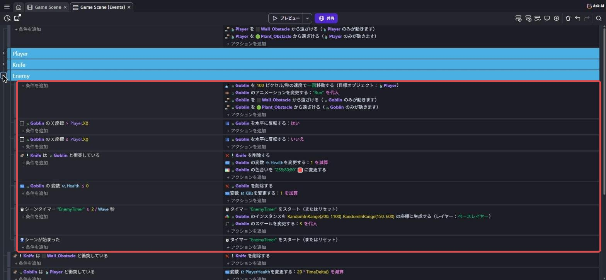
保存してから プレビュー します。
2秒ごとにゴブリンが出てきて、騎士を追いかけてきます。
ナイフを2回当てると、ゴブリンが消えます。
まだゴブリンにさわってもダメージはありません（第4章で作ります）。
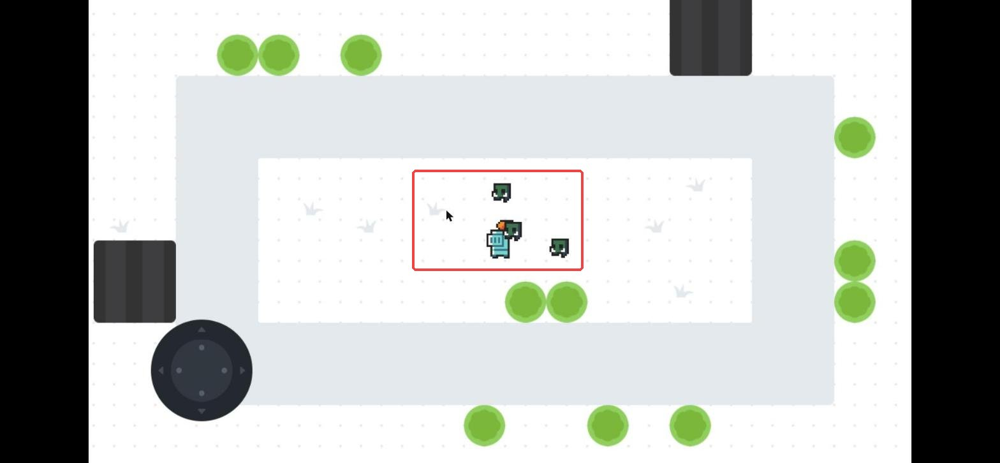
💪 やってみよう
ゴブリンの速さ（100）、体力（2）、出てくる間かく（2秒）を変えて、むずかしさを調整してみよう。
ヒント
速さは「オブジェクトに向かって移動するフォースを追加する」、体力は Goblin の オブジェクト変数、間かくはタイマーの条件の数字です。
2-6. 🚨 つまずきポイント集
ゴブリンが1体も出てこない
原因: 「シーンが始まった」でタイマーをスタートしていない、またはタイマーの名前がちがう。
直し方: 2か所とも "EnemyTimer" になっているか、大文字・小文字まで確かめよう。
ゴブリンがとても小さい
原因: 作ったあとの「スケール」を入れていない。
直し方: オブジェクトを生成する のすぐ下に「スケール」で 3 を入れよう。
ナイフが当たっても倒れない
原因: Health をシーン変数に作ってしまった、または「オブジェクト変数の値」ではなく「変数の値」を使った。
直し方: 一覧の Goblin をクリックして、左の オブジェクト変数 に Health（2）があるか確かめよう。
2-7. ✅ チェックリスト
全部チェックできたら第2章クリア！
🎉 次回は、タイルマップでステージを作るよ。